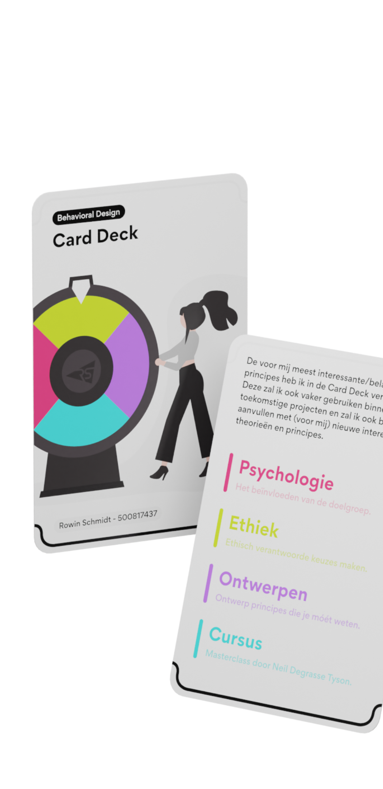
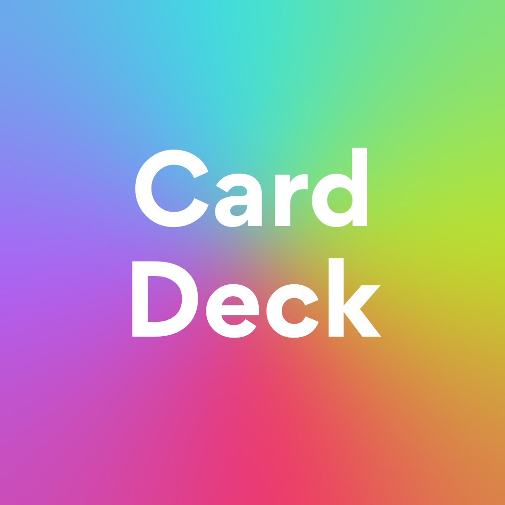
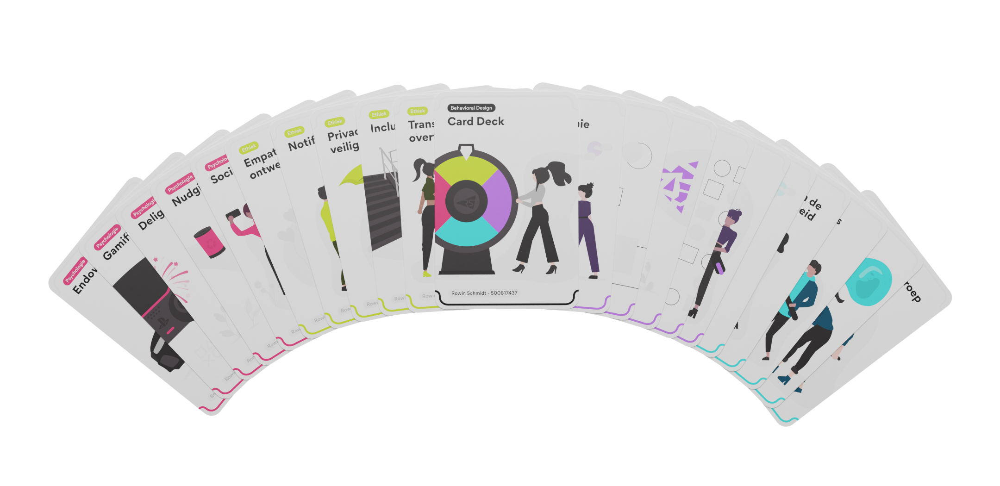

Card Deck
Een stapel zelfgemaakte kaarten waar ik als ontwerper wat aan heb en dus ook regelmatig kan gebruiken tijden het ontwerpproces.
De Card Deck bestaat uit verschillende categorieën, te zien aan de verschillende kleuren. Per categorie zijn er meedere kaarten geclusterd. Het idee van de Card Deck is om mij als ontwerper te helpen bij dit proces.
De theorie van de kaartjes heb ik zelf opgeschreven a.d.h.v. verschillende bronnen online en het vak Behavioural Design. Zo heb ik de voor mij interessantste inzichten binnen de desbetreffende categorieën opgeschreven per kaartje, wat het dus ook écht persoonlijk maakt. De illustraties heb ik op een passende manier vormgegeven per kaartje en dient tevens als verduidelijking van de tekst.
Deze kaartjes probeer ik zo veel mogelijk te gebruiken bij het maken van verschillende opdrachten. Zo blijf ik mijzelf bewust houden van verschillende ontwerp dilemma's en andere ontwerpkeuzes.
Naast het uitwerken van deze kaartjes in "2D", heb ik deze ook in een 3D omgeving geplaatst, om de kaartjes wat meer tot leven te wekken - dat werd erg gewaardeerd tijdens het presenteren van de Card Deck.
- 
- 
- 